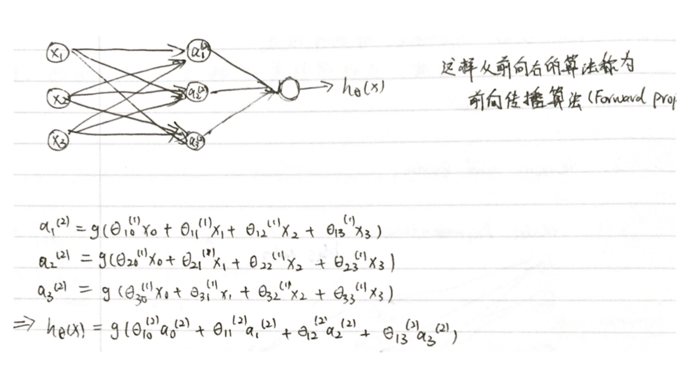

非线性假设 Non-linear Hypotheses
我们之前学的，无论是线性回归还是逻辑回归都有这样一个缺点，即：当特征太多时，计算的负荷会非常大。
假设我们希望训练一个模型来识别视觉对象（例如识别一张图片上是否是一辆汽车），我们怎样才能这么做呢？一种方法是我们利用很多汽车的图片和很多非汽车的图片，然后利用这些图片上一个个像素的值（饱和度或亮度）来作为特征。
假如我们只选用灰度图片，每个像素则只有一个值（而非 RGB值），我们可以选取图片上的两个不同位置上的两个像素，然后训练一个逻辑回归算法利用这两个像素的值来判断图片上是否是汽车.
模型表示 Model Representation I
神经网络模型建立在很多神经元之上，每一个神经元又是一个个学习模型。这些神经元（也叫激活单元，activation unit）采纳一些特征作为输出，并且根据本身的模型提供一个输出。下图设计出了类似于神经元的神经网络，在神经网络中，参数又可被成为权重（weight）。
其中$x_1$, $x_2$, $x_3$是输入单元（input units），我们将原始数据输入给它们。
$a_1$, $a_2$, $a_3$是中间单元，它们负责将数据进行处理，然后呈递到下一层。
最后是输出单元，它负责计算${h_\theta}\left( x \right)$。
神经网络模型是许多逻辑单元按照不同层级组织起来的网络，每一层的输出变量都是下一层的输入变量。下图为一个3层的神经网络，第一层成为输入层（Input Layer），最后一层称为输出层（Output Layer），中间一层成为隐藏层（Hidden Layers）。我们为每一层都增加一个偏差单位（bias unit）。
下面引入一些标记法来帮助描述模型：
$a_{i}^{\left( j \right)}$ 代表第$j$ 层的第 $i$ 个激活单元。${ {\theta }^{\left( j \right)}}$代表从第 $j$ 层映射到第$ j+1$ 层时的权重的矩阵，例如${ {\theta }^{\left( 1 \right)}}$代表从第一层映射到第二层的权重的矩阵。其尺寸为：以第 $j+1$层的激活单元数量为行数，以第 $j$ 层的激活单元数加一为列数的矩阵。例如：上图所示的神经网络中${ {\theta }^{\left( 1 \right)}}$的尺寸为 3*4。
对于上图所示的模型，激活单元和输出分别表达为：
$a_{1}^{(2)}=g(\Theta _{10}^{(1)}{ {x}_{0}}+\Theta _{11}^{(1)}{ {x}_{1}}+\Theta _{12}^{(1)}{ {x}_{2}}+\Theta _{13}^{(1)}{ {x}_{3}})$
$a_{2}^{(2)}=g(\Theta _{20}^{(1)}{ {x}_{0}}+\Theta _{21}^{(1)}{ {x}_{1}}+\Theta _{22}^{(1)}{ {x}_{2}}+\Theta _{23}^{(1)}{ {x}_{3}})$
$a_{3}^{(2)}=g(\Theta _{30}^{(1)}{ {x}_{0}}+\Theta _{31}^{(1)}{ {x}_{1}}+\Theta _{32}^{(1)}{ {x}_{2}}+\Theta _{33}^{(1)}{ {x}_{3}})$
${ {h}_{\Theta }}(x)=g(\Theta _{10}^{(2)}a_{0}^{(2)}+\Theta _{11}^{(2)}a_{1}^{(2)}+\Theta _{12}^{(2)}a_{2}^{(2)}+\Theta _{13}^{(2)}a_{3}^{(2)})$
上面进行的讨论中只是将特征矩阵中的一行（一个训练实例）喂给了神经网络，我们需要将整个训练集都喂给我们的神经网络算法来学习模型。
我们可以知道：每一个$a$都是由上一层所有的$x$和每一个$x$所对应的决定的。
（我们把这样从左到右的算法称为前向传播算法( FORWARD PROPAGATION )）

模型表示 Model Representation II
相对于使用循环来编码，利用向量化的方法会使得计算更为简便。以上面的神经网络为例，试着计算第二层的值：
我们令 ${ {z}^{\left( 2 \right)}}={ {\theta }^{\left( 1 \right)}}x$，则 ${ {a}^{\left( 2 \right)}}=g({ {z}^{\left( 2 \right)}})$ ，计算后添加 $a_{0}^{\left( 2 \right)}=1$。
令 ${ {z}^{\left( 3 \right)}}={ {\theta }^{\left( 2 \right)}}{ {a}^{\left( 2 \right)}}$，则 $h_\theta(x)={ {a}^{\left( 3 \right)}}=g({ {z}^{\left( 3 \right)}})$。
这只是针对训练集中一个训练实例所进行的计算。如果我们要对整个训练集进行计算，我们需要将训练集特征矩阵进行转置，使得同一个实例的特征都在同一列里。即：
${ {z}^{\left( 2 \right)}}={ {\Theta }^{\left( 1 \right)}}\times { {X}^{T}} $
${ {a}^{\left( 2 \right)}}=g({ {z}^{\left( 2 \right)}})$
其实神经网络就像是logistic regression，只不过我们把logistic regression中的输入向量$\left[ x_1\sim {x_3} \right]$ 变成了中间层的$\left[ a_1^{(2)}\sim a_3^{(2)} \right]$, 即: $h_\theta(x)=g\left( \Theta_0^{\left( 2 \right)}a_0^{\left( 2 \right)}+\Theta_1^{\left( 2 \right)}a_1^{\left( 2 \right)}+\Theta_{2}^{\left( 2 \right)}a_{2}^{\left( 2 \right)}+\Theta_{3}^{\left( 2 \right)}a_{3}^{\left( 2 \right)} \right)$
我们可以把$a_0, a_1, a_2, a_3$看成更为高级的特征值，也就是$x_0, x_1, x_2, x_3$的进化体，并且它们是由 $x$与$\theta$决定的，因为是梯度下降的，所以$a$是变化的，并且变得越来越厉害，所以这些更高级的特征值远比仅仅将 $x$次方厉害，也能更好的预测新数据。
这就是神经网络相比于逻辑回归和线性回归的优势。
样本和直观理解 - Examples and Intuitions
二元逻辑运算符（BINARY LOGICAL OPERATORS）当输入特征为布尔值（0或1）时，我们可以用一个单一的激活层可以作为二元逻辑运算符，为了表示不同的运算符，我们只需要选择不同的权重即可。
下图的神经元（三个权重分别为-30，20，20）可以被视为作用同于逻辑与（AND）：
下图的神经元（三个权重分别为-10，20，20）可以被视为作用等同于逻辑或（OR）：
下图的神经元（两个权重分别为 10，-20）可以被视为作用等同于逻辑非（NOT）：
我们可以利用神经元来组合成更为复杂的神经网络以实现更复杂的运算。例如我们要实现XNOR 功能（输入的两个值必须一样，均为1或均为0），即 $\text{XNOR}=( \text{x}_1\, \text{AND}\, \text{x}_2 )\, \text{OR} \left( \left( \text{NOT}\, \text{x}_1 \right) \text{AND} \left( \text{NOT}\, \text{x}_2 \right) \right)$
首先构造一个能表达$\left( \text{NOT}\, \text{x}_1 \right) \text{AND} \left( \text{NOT}\, \text{x}_2 \right)$部分的神经元：
然后将表示 AND 的神经元和表示$\left( \text{NOT}\, \text{x}_1 \right) \text{AND} \left( \text{NOT}\, \text{x}_2 \right)$的神经元以及表示 OR 的神经元进行组合：
我们就得到了一个能实现 $\text{XNOR}$ 运算符功能的神经网络。
按这种方法我们可以逐渐构造出越来越复杂的函数，也能得到更加厉害的特征值。
多类分类 Multiclass Classification
当我们有不止两种分类时（也就是$y=1,2,3….$），比如以下这种情况，该怎么办？如果我们要训练一个神经网络算法来识别路人、汽车、摩托车和卡车，在输出层我们应该有4个值。例如，第一个值为1或0用于预测是否是行人，第二个值用于判断是否为汽车。
输入向量$x$有三个维度，两个中间层，输出层4个神经元分别用来表示4类，也就是每一个数据在输出层都会出现${ {\left[ a\text{ }b\text{ }c\text{ }d \right]}^{T}}$，且$a,b,c,d$中仅有一个为1，表示当前类。下面是该神经网络的可能结构示例：
神经网络算法的输出结果为四种可能情形之一：